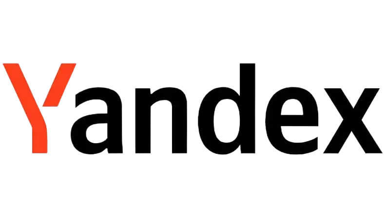
—— 开启全球 AI 算力新纪元
NEO 携手俄语区科技巨头，以西伯利亚清洁能源为基石，打造全球唯一的 AI 算力交易市场。
Yandex —— 俄语区科技领军者与 AI 超算巨头
作为全球顶尖的科技集团与"俄语区科技基石"，Yandex 拥有深厚的人工智能与大模型（YandexGPT）技术底座。旗下运营着 Chervonenkis 等多座全球顶尖的超级计算机集群，并构建了涵盖云端算力、搜索引擎、自动驾驶与智能生态的全栈技术矩阵，为全球智能化升级提供澎湃动力。
依托西伯利亚极寒气候与天然水电，NEO 构建零碳、高稳定的未来算力中心，从源头压低能耗成本，赋能可持续 AI 训练。
打破传统算力孤岛，全球首创 AI 算力资产化与流通体系。让闲置算力、大模型训练权与代币经济实现毫秒级去中心化撮合与自由买卖。
打通与 Yandex 顶级超算集群及大模型架构的技术对齐，实现顶尖算法与分布式高能算力的无缝兑现。
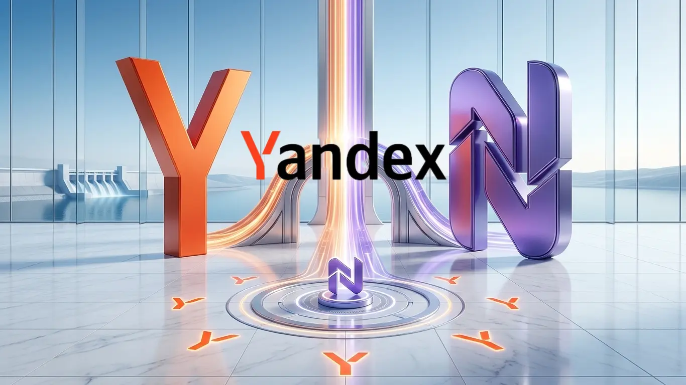
我们正处于人工智能大爆发与绿色能源转型的交汇点。NEO AI 算力矩阵正式开启与俄罗斯科技巨头 Yandex 的全方位生态协同。在这里，我们不只是聚合算力——我们正在定义未来。通过将西伯利亚绿色清洁能源算力中心与全球唯一的 AI 算力交易市场深度绑定，NEO 首次将算力变为可自由流通、高效变现的硬通货。
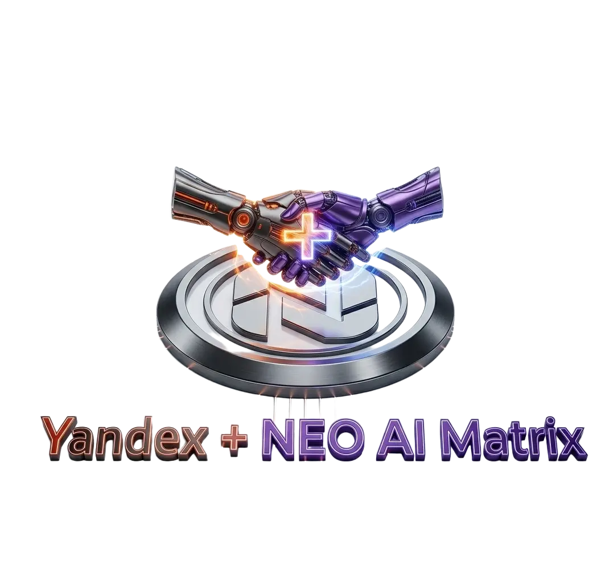
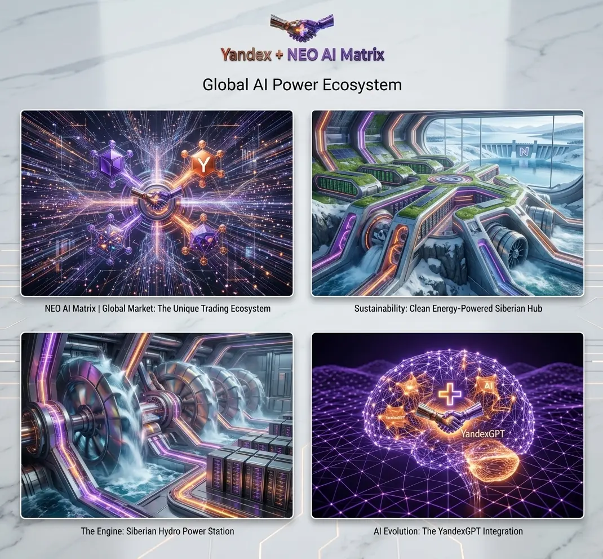
从 Yandex 的顶尖 AI 算法底座，到 NEO 的去中心化绿色算力网络，每一瓦电力都在创造智能，每一份算力都在兑现价值。
100%
绿色清洁能源占比
<10ms
算力流转效率
3-5年
全球最大智算中心
以冰雪绿能，铸 AI 算力之王。
抢先加入全球唯一的 AI 算力交易市场，共享万亿级智能化红利。
NEO Energy Mining: 绿色能源算力生态系统
基础设施与硬件规格
NEO Energy总部位于俄罗斯，在完全符合当地法律法规的框架下，构建了高性能、合规化的算力集群。
- • 装机容量：总供应量 200 万台原始矿机，合成矿机 100 万台。
- • 性能指标：单机算力达 30 TH/S，额定功耗为 1500W。
- • 核心技术：集成 AI智能算力 分配系统，实现资源利用最优解。
创新治理架构：多通证协同模型
项目首创 六维解耦型通证经济模型，通过不同功能的数字资产，实现全链路的闭环管理：
- • 价值流通与激励：涵盖核心价值载体、算力增益机制与生态收益分红。
- • 网络运维与映射：包含网络燃料（Gas）消耗、实体资产（RWA）映射以及跨链互操作性流转。
技术保障与信任机制
- • 混合共识机制：结合多种共识协议，确保网络的高效性与去中心化安全。
- • 链上核验系统：通过分布式账本实时核验物理算力，消除信息孤岛，建立去中心化信任纽带。
绿色能源与可持续发展
生态系统深度整合分布式清洁能源节点，推动能源生产与算力消耗的协同：
- • 多能互补：整合水电、光伏、风电及生物质能。
- • 能效优化：从源头降低碳排放强度，将区块链算力转化为推动绿色能源转型的核心动力。
内容正在补充中
NEO 项目理事会是 NEO AI 算力矩阵与 NRY 生态公共利益的最高监督与战略协调机构。理事会独立于日常商业开发执行，由核心协议研发代表、独立安全专家、AI 算力基础设施顾问及社区选举代表共同组成，致力于守护生态国库安全、规范算力资源激励分配，并推动协议向完全去中心化的 AI 算力交易网络平稳演进。
理事会四大核心职权
NRY 生态国库与算力激励审批
监督生态国库多签账户资金安全，审批季度生态发展预算、AI 算力节点补贴池调整及战略级开发者 Grants 资助，确保每一笔 NRY 生态激励流向真实算力与生态建设。
核心协议升级与安全审查
对底层算力调度协议、智能合约重大版本升级及跨链扩展方案进行最终技术与安全复核，拥有针对恶意治理攻击与极端风险的紧急安全否决权。
5/7 链上多签与利益回避制度
理事会所有重大决议均通过链上 5/7 多签机制执行；当任何理事成员与申请生态资助或算力合作的项目存在关联时，必须强制公开披露并回避表决。
12 个月任期轮换与社区共治
每届理事任期 12 个月，实行定期评估与席位轮换机制。其中社区与节点代表席位由生态参与者公开提名并投票产生，保障一线算力提供者与持币用户的治理话语权。
7 席多方制衡治理架构
当前届期：2026 Q4 — 2027 Q4
为兼顾 AI 算力网络的技术演进效率与生态去中心化制衡，首届 NEO 项目理事会设立 7 个席位，覆盖“协议研发（2 席）+ 独立安全与合规（2 席）+ 生态机构与算力节点（1 席）+ 社区与开发者直选（2 席）”。
首届理事会成员名单
7 席示例文案，可直接替换实名/代号
治理决策流程
阶段一：社区温度检查（RFC 草案）
任何社区成员、算力节点或核心开发组均可在治理论坛发布提案草案（RFC），进行为期 5–7 天的公开讨论与修订。
阶段二：理事会合规与安全初审
理事会安全与合规席位对正式提案进行技术安全性与国库预算合理性评估，确保不存在合约漏洞或资金滥用风险。
阶段三：社区共识投票与理事会终审
提案经社区快照表决通过后，由理事会召开例会审议，需获得至少 5/7 超级多数同意方可执行。
阶段四：链上多签与时间锁执行（Timelock）
决议通过后触发 48 小时安全时间锁（紧急安全防御除外），由多签钱包在链上执行国库拨款或协议参数更新，并同步公开会议纪要。
公开透明与链上可验证
NEO AI 算力矩阵坚持“代码开源、国库透明、决议可溯”，所有生态资金流向与理事会表决记录均向全网永久公开。
国库多签金库
实时查看 NRY 生态国库链上余额与每笔多签转出记录。
季度透明度与审计报告
查阅季度算力生态补贴支出明细、合约安全审计报告及节点运行数据。
理事会会议纪要与提案库
浏览历史议题讨论摘要、各位理事表决立场及提案执行进度。
合规与演进声明
NEO 项目理事会章程将随生态发展阶段持续迭代。随着 AI 算力交易市场与主网基础设施的逐步完善，理事会将分阶段把更多参数决策权与国库审批权移交至链上社区治理，最终实现生态的完全去中心化自治。
内容正在补充中
技术攻坚、产品与商业执行
治理、增长与全球大使网络
内容正在补充中
从绿色能源基建到下一代去中心化 AI 算力网络
BitRiver 是欧亚及独联体（CIS）地区规模最大的绿色算力数据中心运营商、能源基础设施服务商及高性能计算（HPC/AI）底座构建者。公司总部位于俄罗斯莫斯科，核心基因是“重资产能源算力地产 + 轻资产数字化运营”，通过整合低成本可再生能源与高寒自然冷却优势，为全球机构客户与人工智能生态提供标准化、合规化、高能效的底层算力支撑。随着全球人工智能浪潮的爆发，BitRiver 正将其积累多年的数百兆瓦级物理能源与数据中心底座全面注入旗下核心战略板块——NEO AI 算力矩阵（www.neoneo.ink），实现从传统区块链基建巨头向下一代去中心化 AI 算力网络的全面跃迁。
创立初期与萌芽阶段
- 创始背景：2017年，具备多年企业管理、金融与 IT 基础设施背景的俄罗斯企业家伊戈尔·鲁内茨（Igor Runets）正式创立 BitRiver。面对当时全球算力中心普遍受困于高电价与高制冷能耗的痛点，团队确立了从底层能源端破局的战略方向。
- 选址逻辑与资源锁定：团队将核心基地锚定俄罗斯西伯利亚伊尔库茨克州的布拉茨克（Bratsk）。当地依托布拉茨克水电站等超大型水电基础设施，常年拥有充沛富余清洁电力；同时西伯利亚高寒气候每年有超过 8 至 9 个月可实现自然风冷散热，将数据中心电源使用效率（PUE）压低至 1.05—1.10 的世界顶尖水准，为日后承载高功耗 GPU 智算集群奠定了天然物理优势。
- 商业模式确立：确立了“重资产基础设施 + 标准化托管运营”的 B2B 架构，专注兆瓦（MW）级机构客户服务，积累了深厚的超大规模电力调度与园区管理经验。
旗舰基地落地与爆发式扩张
- 首座旗舰数据中心投产（2019年）：BitRiver 在布拉茨克正式投运首座 100 MW 级旗舰数据中心，凭借稳定的高压供电、24 小时全天候安保及自主研发的智能运维系统，迅速吸引全球头部算力机构入驻。
- 多点布局与产能跃升（2020年—2021年）：随全球算力格局重塑，BitRiver 陆续在布里亚特共和国、克拉斯诺亚尔斯克边疆区、秋明州等地建成及扩建 10 余个大型算力中心，总电力接入容量突破 300 MW 至 500 MW 区间，占据俄罗斯合法合规机构级算力托管市场 50% 以上份额，跻身全球前五大数字基础设施运营商之列。
- 绿色环保与零碳认证：凭借超过 90% 的电力来源于水力发电，BitRiver 获得了多项国际 ESG 与绿色算力认证，构建了兼具低成本与低碳排放的全球稀缺算力资产池。
能源多元化与工程能力纵深
- 携手能源巨头破解“伴生气”难题：BitRiver 与俄罗斯天然气工业石油公司（Gazprom Neft）等能源巨头达成战略合作，在偏远油田部署模块化移动数据中心，将原本只能火炬燃烧浪费的油田伴生气（APG）转化为廉价电力，开辟了不受传统电网限制的分布式离网能源通道。
- 工程设计与液冷模块自研：公司建立了专属工程设计中心与设备组装线，掌握了定制化高压变电站、高密度集装箱式液冷/风冷算力模块及自动化集群调度软件的核心能力，大幅缩短了新算力园区的交付周期。
合规化转型与国家战略级基建确立
- 市场重心重构与跨境布局（2022年—2023年）：面对地缘政治环境变化，BitRiver 迅速调整全球化路径，将核心业务全面转向俄罗斯本土大型企业、主权背景机构以及中东、亚洲、金砖国家（BRICS）的算力生态伙伴，推动跨国算力资源协作。
- 国家合规龙头地位确立（2024年）：深度参与俄罗斯数字资产与算力基础设施立法建言，并在 2024 年俄罗斯正式颁布相关合法化法案后，成为首批纳入俄罗斯联邦税务局（FTS）国家合规基础设施运营商名录的领军企业，正式确立了“国家战略级能源与数字基础设施”的核心地位。
全面聚焦并倾力打造 NEO AI 算力矩阵
进入人工智能大模型与分布式计算时代，BitRiver 明确将 NEO AI 算力矩阵（www.neoneo.ink）作为公司未来最具成长性的核心战略引擎，推动集团从传统 PoW 算力托管向“绿色能源 + AI 智算集群 + Web3 算力调度网络”全面升级：
- 物理算力底座向 NEO 全面赋能（Physical-to-Digital Bridge）：BitRiver 正将其手握的数百兆瓦已批复绿色电力指标、高寒自然冷却园区以及新一代高密度液冷 GPU 机柜集群，分阶段接入 NEO AI 算力矩阵。通过这一战略整合，BitRiver 负责底层重资产数据中心建设、低成本清洁能源供应与 7×24 小时工业级运维，而 NEO 则作为面向全球的数字化窗口与算力调度协议层，将实体算力转化为可随时调用、透明结算的标准化 AI 算力资产。
- 构建“协议交付 + 生态共治”的现代化组织体系：为推动 NEO 算力矩阵的全球化与去中心化发展，BitRiver 战略发起并确立了“核心技术研发实体 + 社区生态与项目理事会”的双轨治理架构。依托 NRY 经济模型与链上多签透明监督机制，NEO 打破了传统中心化云厂商的算力垄断与高昂溢价，让全球 AI 创业团队、科研机构与 Web3 开发者都能低门槛获取来自 BitRiver 绿色数据中心的澎湃算力。
- 打造 1 GW 级能源-智算超级园区与金砖跨境算力网络：未来几年，BitRiver 规划在西伯利亚及远东地区继续推进总容量超 1 GW（1000 兆瓦）级别的新一代能源算力综合体建设，承担国家电网削峰填谷的柔性负荷调节功能；同时依托金砖国家（BRICS）及中东、亚洲合作伙伴网络，将“绿色水电/伴生气 + 模块化智算中心”标准向全球输出。而 NEO AI 算力矩阵将作为这一庞大实体算力网络的统一交易市场、价值结算中枢与全球生态入口，引领 BitRiver 迈入“绿色能源驱动普惠 AI”的全新十年。
白皮书概要
v1.0摘要
本项目立足于全球区块链产业结构转型与能源革命双重历史机遇，构建一套以清洁能源为核心驱动、以分布式算力为价值载体、以区块链技术为信任底座的新一代算力挖矿生态系统。
当前全球算力需求呈现指数级增长态势，人工智能大模型训练、分布式存储网络、Web3 基础设施、元宇宙实时渲染、链上交易清算等场景共同推动算力成为数字经济时代的核心生产要素。
然而，传统算力生产模式普遍存在高能耗、高污染、算力垄断、资产固化、收益分配不均、监管压力持续加大等系统性问题，严重制约行业长期可持续发展。
为系统性解决上述痛点，本项目创新性提出多通证协同治理架构，通过发行六种功能解耦型数字通证，实现核心价值流通、算力增益激励、网络燃料消耗、实体资产映射、生态收益分红与跨链价值流转的全链路闭环。
项目以分布式清洁能源节点网络为物理基础，以混合共识机制为技术保障，以链上算力核验系统为信任纽带，推动水电、光伏、风电、生物质能等绿色能源与区块链算力生产深度融合。
1 项目概述
1.1 项目名称
新一代清洁能源算力挖矿生态系统（Neo Energy Mining Ecosystem，简称 NEO 生态）。
项目名称以 "Neo" 代表新生、革新与下一代技术范式，以 "Energy" 突出清洁能源核心驱动属性，以 "Mining Ecosystem" 强调生态化、系统化、平台化的整体定位，区别于传统单一矿机、单一矿池类项目。
项目并非简单的挖矿工具或代币发行项目，而是一套覆盖能源端、算力端、交易端、应用端与治理端的完整分布式价值网络。名称体系简洁统一，便于全球社区传播、品牌建设与生态拓展。
1.2 项目愿景
成为全球领先的去中心化清洁能源算力基础设施运营商，构建绿色、高效、开放、共享、共治的数字算力生产与价值分配体系。
推动全球区块链行业从高耗能粗放式增长向低碳集约式可持续发展转型，最终实现算力价值民主化、能源利用高效化、数字资产普惠化。
愿景的核心逻辑在于重新定义 "算力生产关系"。传统挖矿体系中，资本、矿场、电力资源与技术门槛形成天然壁垒，导致普通参与者难以分享行业增长红利。
本项目希望通过去中心化架构打破壁垒，让个体节点、家庭储能、小型清洁能源站点均可接入算力网络，共同分享数字经济增长收益，推动算力从 "机构垄断" 走向 "全民共享"。
1.3 项目使命
通过区块链智能合约、分布式账本技术与物联网能源监测系统，重构算力生产、分配、交易与质押全流程；降低用户参与挖矿的硬件门槛、资金门槛与技术门槛。
提升可再生能源在区块链行业中的使用比例；建立链上可核验、数据可追溯、收益可分配的透明算力价值体系。
使命落地分为三个层次：技术层实现可信算力上链，经济层实现多维度激励闭环，社会层实现绿色低碳价值输出。
项目不仅追求商业可持续性，更强调环境责任与社会责任，通过技术创新降低单位算力能耗，为全球数字经济低碳化发展提供可复制、可推广的行业解决方案。
1.4 核心定位
绿色算力挖矿基础设施：定位为底层算力基础设施提供商，专注于清洁能源驱动的分布式节点网络，构建覆盖电力监测、算力调度、收益清算、节点管理的一体化系统。
实体算力链上资产化平台：通过 NEA 通证实现实体矿机、算力份额、电力合约、矿场产权等线下资产的链上映射、拆分、流转与融资，使传统低流动性资产具备高流通性与金融属性。
多代币协同激励生态：以六种通证功能解耦为核心，构建 "价值锚定 — 加速激励 — 燃料消耗 — 资产映射 — 收益分红 — 跨链流转" 的完整经济循环。
跨链互通算力价值网络：以 NCL 通证为跨链枢纽，打通比特币、以太坊、BSC、Solana 等主流公链生态，实现算力价值的跨链迁移。
2 行业背景与市场痛点
2.1 行业发展现状
近年来，区块链技术从小众技术实验逐步走向规模化商业应用，加密资产市值规模、链上交易笔数、智能合约调用量持续攀升。
与此同时，人工智能大模型进入爆发期，GPT 系列、多模态大模型、自动驾驶训练、科学计算等场景对算力需求呈指数级增长，算力已经成为继土地、劳动力、资本、技术之后的第五大生产要素。
全球算力市场规模以年均超 40% 的速度增长，算力供给端呈现明显缺口。传统 PoW 挖矿通过算力竞争保障区块链去中心化安全，但随着全网算力规模扩大，硬件不断迭代，ASIC 矿机、大规模矿场成为行业主流，导致挖矿产业逐渐走向集中化与重资产化。
2.2 传统挖矿核心痛点
能源消耗过高：传统 PoW 挖矿以高算力换取高收益，硬件功耗持续攀升。大量矿场依赖火电等传统能源，单位算力碳排放强度高，电价波动直接影响收益稳定性。
算力高度垄断：大型矿池掌握全网 50% 以上算力，头部机构通过资金优势、电力优势与矿机渠道优势形成壁垒，普通用户无法获得低成本电力与低价矿机。
挖矿门槛高、成本不透明：个人参与需购置专业矿机、支付高昂电费、承担场地租赁、运维管理等成本。同时云算力平台普遍存在暗箱操作、超售算力等问题，资金安全缺乏保障。
算力资产无法流动：实体矿机属于重资产、专用资产，难以拆分、转让、抵押或租赁。算力合同非标化，交易依赖线下信任，流动性极差。
生态割裂、价值孤岛：绝大多数项目采用单一代币模型，代币同时承担支付、质押、治理、燃料、分红等功能，导致经济模型混乱，代币价格承压严重。
缺乏合规与可持续模式：大量项目无明确合规框架，通证模型设计简单粗暴，缺乏真实资产支撑，完全依赖二级市场炒作。
2.3 市场机遇
全球 AI 算力需求年均增速超过 50%，分布式存储、Web3 节点、元宇宙实时计算进一步推高算力价格。
同时，全球能源结构向清洁能源转型，光伏、风电成本持续下降，绿色电力具备规模化替代传统电力的基础。
政策层面，多国推出支持绿色数据中心、低碳区块链、零碳算力园区的扶持政策，绿色挖矿具备显著合规优势。
本项目恰好契合能源革命、数字经济、区块链合规化三大趋势，具备长期结构性增长机遇。
3 项目解决方案与创新价值
3.1 整体解决方案
项目构建 "能源层 — 算力层 — 链上层 — 应用层 — 治理层" 五层架构体系：
- 能源层：接入水电、光伏、风电等清洁能源，部署智能电表与物联网监测设备
- 算力层：分布式矿机节点、轻节点、云算力节点共同构成算力网络
- 链上层：区块链底层、智能合约、跨链桥、算力核验系统
- 应用层：钱包、浏览器、矿池、交易市场、借贷理财、NEA 资产平台
- 治理层：社区投票、理事会、技术委员会、节点共治体系
通过五层结构实现：清洁能源可信上链 → 算力标准化封装 → 资产通证化映射 → 多通证激励循环 → 跨链价值互通 → 社区自治治理，形成完整商业闭环。
3.2 核心创新
清洁能源挖矿标准：建立清洁能源接入认证体系，通过物联网设备实时采集电力来源、碳排放数据、能耗强度等指标，上链存证不可篡改。满足绿色标准的节点可获得额外收益加成。
六维通证经济模型：六种通证各司其职：NEO 为价值核心与流通媒介；NEX 为算力加速与增益；NET 为 Gas 燃料与燃烧通缩；NEA 为实体算力资产映射；NRY 为生态利润分红；NCL 为跨链枢纽。功能解耦避免单一代币承压。
实体算力链上资产化 NEA：将矿机、算力、电站、电力合约转化为 NEA 通证，支持碎片化拆分、链上转让交易、质押借贷、租赁收益、抵押清算、证券化融资，大幅提升资产流动性与金融属性。
低门槛全民挖矿机制：支持手机轻节点挖矿、家庭算力共享、质押挖矿、云算力挖矿、节点托管挖矿。用户无需专业知识即可参与，真正实现全民算力共享。
跨链生态互通 NCL：NCL 承担跨链验证、中继节点激励、资产兑换路由等功能，实现多链资产自由流动，提升生态外部价值支撑。
通缩型经济模型：通过 NET 燃料燃烧、交易手续费燃烧、生态回购销毁、质押锁仓等机制控制代币流通量，提升长期价值稳定性。通缩机制与真实算力收益相结合，形成价值支撑双引擎。
4 技术架构
4.1 底层区块链架构
项目采用自主研发模块化底层公链，核心模块包括 P2P 网络模块、分布式账本模块、加密签名模块、智能合约虚拟机、交易内存池、区块打包与同步模块、数据分片存储模块、跨链协议适配模块。
底层支持 10000+ TPS，交易确认延迟控制在 3–5 秒，支持智能合约图灵完备，兼容 EVM 生态，降低开发者迁移成本。
底层采用账户模型与 UTXO 模型混合架构，兼顾交易效率与安全性。账本结构采用多级分片存储，提升数据处理能力与节点同步速度。
加密算法采用国密算法与国际通用加密算法双重支持，满足不同地区合规要求。底层代码完全开源，接受社区审计与监督，保障技术透明可信。
4.2 网络层级
4.2.1 核心层
核心层由超级节点与共识节点构成，负责区块生成、账本同步、交易验证、跨链验证。节点采用硬件加密与多重签名防护，确保网络安全。
核心节点需通过社区投票选举产生，具备高算力、高在线率、清洁能源认证等条件，节点作恶将面临惩罚与剔除机制。
4.2.2 服务层
服务层包括算力核验服务、矿机状态监测服务、能源数据采集服务、智能合约调度服务、收益自动分发服务、链上数据审计服务。
所有服务 API 化、标准化，支持第三方接入。服务层采用微服务架构，可独立升级、独立扩容，不影响整体系统运行。
4.2.3 应用层
应用层面向用户，包括多链钱包、区块链浏览器、挖矿客户端、矿池管理后台、NEA 资产交易市场、质押理财平台、跨链兑换工具。
界面简洁易用，支持移动端与 PC 端，支持多语言切换，满足全球用户使用需求。
4.3 安全体系
项目构建全维度安全体系，包括多重签名账户体系、节点权限分级管理、异常算力监测预警、防 DDOS 与 CC 攻击、智能合约形式化验证、链上行为审计、应急冻结与熔断机制、隐私数据加密存储。
所有合约均通过第三方专业安全审计，核心代码经过多轮测试与漏洞修复。
系统设置安全理事会，对异常交易、恶意节点、攻击行为进行实时监控与处置。用户资产采用多签托管与链上隔离机制，即使单点出现风险也不会导致全局资产损失。
跨链模块采用多重验证机制，避免跨链桥漏洞带来的资产风险。
4.4 数据透明机制
算力数据、能耗数据、区块高度、交易记录、通证分配、销毁记录、质押量、挖矿产出量全部上链，任何人可通过区块链浏览器实时查询，实现完全公开、透明、可追溯。
所有规则调整、参数修改、合约升级均需公示并上链执行，杜绝暗箱操作。数据透明机制是生态信任的基础，也是社区治理的重要依据。
5 共识机制与挖矿原理
5.1 共识机制：PoE + PoS + DPoS 混合共识
5.1.1 PoE（Proof of Energy）能源算力证明
核心逻辑：算力收益与有效算力、清洁能源占比、在线稳定时长正相关，与全网挖矿难度负相关。
公式：R = (P × E × T) / D
- P：节点有效算力
- E：清洁能源系数（0.8–1.5）
- T：在线稳定时长
- D：全网难度
- R：区块奖励权重
5.1.2 PoS（Proof of Stake）权益质押证明
质押 NEO 可提升节点信用等级，获得收益加成。加成公式：B = 1 + min(S/10000, 0.5)
- S：质押数量
- B：收益加成系数
5.1.3 DPoS（Delegated Proof of Stake）社区节点治理
社区投票选出 21 个超级节点，负责出块与治理，获得额外节点奖励。超级节点定期轮换，确保去中心化程度。
5.2 挖矿类型
- 节点挖矿：运行全节点贡献算力与带宽获取奖励
- 质押挖矿：质押 NEO 获得算力增益与收益分红
- 清洁能源挖矿：接入绿色能源节点获得额外奖励
- 矿机映射挖矿：实体矿机绑定链上资产参与挖矿
- 跨链挖矿：通过 NCL 实现跨链算力互通奖励
- 生态贡献挖矿：社区建设、开发者贡献、推广奖励
5.3 挖矿收益规则
- 算力越高，收益权重越高
- 清洁能源节点享受 20% 额外加成
- 长期质押（≥180 天）享受 15% 额外增益
- 社区治理超级节点获得 10% 额外奖励
- 早期参与者（第一年内）享受 1.8 倍早期红利系数
- 邀请奖励：下级收益的 5% 奖励给邀请人，上限 10 级
6 通证经济体系
6.1 通证体系总览
本项目通证经济体系采用 "六维协同模型"，区别于行业内普遍采用的单一代币或双代币模型，通过功能解耦实现生态内部价值流动的精细化分工。六种通证分别承担价值锚定、算力增益、网络燃料、资产映射、收益分红、跨链枢纽职能，形成相互支撑、相互约束、相互促进的闭环经济系统。
单一通证的波动不会对整个生态造成系统性冲击，不同通证之间通过智能合约实现自动兑换、自动燃烧、自动质押与自动分配，提升整体经济韧性。
6.2 NEO 详细设计
NEO（New Energy Ore）是整个清洁能源算力生态的核心通证，承担价值锚定、基础支付、质押抵押、治理投票等核心职能。
NEO 发行总量：1,000,000,000 枚
- 挖矿产出：30%（300,000,000 枚），8 年线性衰减释放
- 生态建设：20%（200,000,000 枚），按季度解锁
- 团队激励：15%（150,000,000 枚），锁仓 2 年，分 12 季度解锁
- 机构投资：15%（150,000,000 枚），锁仓 1 年，分 8 季度解锁
- 社区空投：10%（100,000,000 枚），分阶段发放
- 流动性：10%（100,000,000 枚），锁仓 6 个月后逐步投放
6.3 NEX 详细设计
NEX（Neo Energy Xtreme）定位算力加速通证，仅通过质押与高性能节点产出，不可直接法币购买。总量：500,000,000 枚
- 高性能节点挖矿：40%
- 质押 NEO 产出：25%
- 生态合作：15%
- 团队运营：10%
- 社区激励：10%
6.4 NET 详细设计
NET（Neo Energy Token）为生态燃料，所有链上操作必须消耗 NET。总量：200,000,000 枚，燃烧永不增发
- 节点奖励：35%
- 开发者：30%
- 流动性：20%
- 社区：15%
转账燃烧 10%，发行 NEA 燃烧 15%，跨链燃烧 20%，强通缩模型
6.5 NEA 详细设计
NEA（Neo Energy Asset）为算力资产映射通证，动态发行，资产销毁则通证销毁。
- 实体矿机映射：60%
- 算力质押生成：25%
- 合作机构：10%
- 团队：5%
6.6 NRY 详细设计
NRY（Neo Resource Yield）为生态分红通证，持有者每日分发生态全部利润。总量：300,000,000 枚
- 利润分红池：50%
- 长期持仓奖励：25%
- 节点贡献：15%
- 团队：10%
6.7 NCL 详细设计
NCL（Neo Core Link）为跨链枢纽通证。总量：400,000,000 枚
- 跨链节点：40%
- 生态合作：30%
- 社区治理：15%
- 开发团队：15%
6.8 通证流转闭环
用户挖矿 → 获得 NEO → 质押获取 NEX/NRY → 支付 NET 手续费 → 发行/交易 NEA → 持有 NRY 分红 → NCL 跨链互通 → 全场景燃烧通缩 → 价值回流 NEO
7 生态应用场景
7.1 个人挖矿
普通用户通过手机、电脑轻节点参与挖矿，无需专业矿机，低功耗、低门槛、易操作。
7.2 机构算力服务
矿场、电站、IDC 机房可将算力接入生态，发行 NEA 实现资产证券化与融资。
7.3 质押与理财
质押 NEO 可获得三重收益：基础产出 + NEX 加速 + NRY 分红。
7.4 算力交易市场
NEA 可在链上自由交易、拆分、租赁、抵押，实现算力资产市场化流动。
7.5 跨链资产互通
NCL 跨链桥实现与 BTC、ETH、BSC、Solana 等资产互通。
7.6 生态支付与结算
NEO 作为统一支付工具，用于算力购买、矿机租赁、节点服务等场景。
7.7 去中心化治理
社区投票决定参数调整、挖矿规则、燃烧比例等重大事项。
8 项目治理与社区自治
8.1 治理架构
- 核心理事会：战略、合规、风险
- 技术委员会：代码、安全、升级
- 社区节点代表：社区意见反馈
- 普通持币者：链上投票
8.2 投票机制
权重公式：W = A × T × K
8.3 治理内容
通证发行、挖矿收益、燃烧机制、跨链接入、生态预算、节点奖惩、系统升级等。
9 发展路线图
阶段一：基础搭建（Q1–Q2）
底层公链开发、测试网上线、钱包/浏览器开发、六类通证合约部署、安全审计、早期节点招募。
阶段二：挖矿生态上线（Q3）
主网上线、挖矿功能开放、质押系统上线、矿池系统运行、社区启动、基础支付功能上线。
阶段三：生态扩张（Q4）
NEA 算力映射上线、跨链桥 NCL 上线、交易所合作、算力交易市场上线、全球社区推广。
阶段四：生态成熟（次年）
AI 算力接入、元宇宙算力合作、全球清洁能源节点布局、完全去中心化自治。
10 团队与合作机构
核心团队由区块链底层开发工程师、矿场运营专家、清洁能源行业资深人士、通证经济设计师、安全审计专家、法务合规顾问组成，具备多年行业经验。
合作机构包括：清洁能源电站、算力硬件厂商、区块链安全公司、第三方审计机构、分布式算力平台、行业协会、绿色能源研究机构。
11 风险提示
11.1 政策监管风险
全球各国对区块链、挖矿、数字资产政策存在不确定性，可能导致项目在部分地区无法正常运营。
11.2 市场波动风险
11.2 市场波动风险
通证价格受大盘行情、流动性、市场情绪影响较大，存在大幅下跌可能。
11.3 技术安全风险
智能合约漏洞、网络攻击、跨链风险、节点作恶可能导致资产损失。
11.4 挖矿算力波动风险
全网难度上升、矿机迭代、电力成本上涨可能导致收益下降。
11.5 通证价格下跌风险
早期代币解锁、市场抛压、生态进展不及预期可能导致价格下行。
11.6 流动性风险
上线初期可能存在流动性不足、滑点较大、交易深度不够等问题。
11.7 合作与运营风险
矿场接入不及预期、清洁能源合作推进缓慢、市场推广未达目标可能影响生态发展。
12 合规声明
- 本项目严格遵守运营所在地法律法规，不面向受制裁国家、地区及不合格投资者提供服务。
- 生态内所有通证均为功能型通证，不构成证券、股票、股权、期货、基金或任何形式的理财产品。
- 参与者自愿参与生态，充分了解数字资产市场风险，自行承担投资、技术、政策等全部风险。
- 项目不承诺任何收益，不保证通证价格，所有文案不构成投资建议。
- 项目实行 KYC/AML 合规审查，对异常账户、洗钱、诈骗行为采取限制措施并上报相关机构。
- 团队有权根据政策法规调整生态机制、通证规则、功能模块，调整前将进行社区公示。
- 严禁利用本系统从事非法金融活动、洗钱、诈骗、恐怖主义融资等行为，违者永久封禁。
13 附录
13.1 术语表
PoE、PoS、DPoS、NEO、NEX、NET、NEA、NRY、NCL、算力映射、燃烧通缩、跨链桥、链上核验、清洁能源系数等。
13.2 通证分配明细表
六种通证总量、分配比例、锁仓周期、释放曲线、燃烧机制汇总表。
13.3 挖矿计算公式汇总
收益公式、难度调整公式、质押加成公式、清洁能源系数公式、分红公式。
13.4 智能合约地址
主网合约地址、多签地址、国库地址、燃烧地址（正式上线后公布）。
13.5 版本更新记录
V1.0：初始完整版白皮书，后续升级以社区投票公示为准。
Partners & Wallet
机构介绍
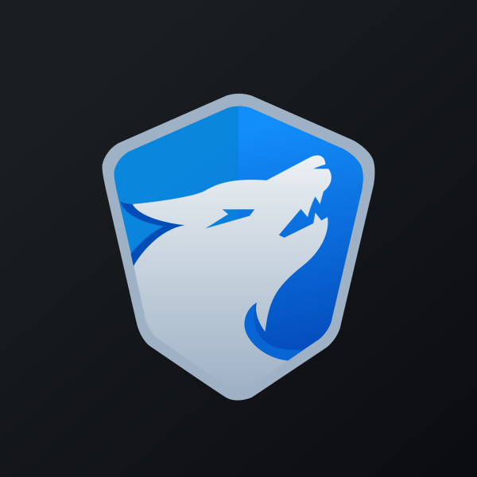
TeraWulf推荐您使用 Bitget Wallet
Bitget Wallet 是一款去中心化的加密钱包，致力于让每个人都能轻松、安全地使用加密货币。目前已整合了包括交易、市场行情、理财、奖励、DApp 浏览器及加密支付在内的全方位链上服务。
Bitget Wallet 支持 130 多条主流公链和上百万种代币，聚合数百个 DEX 与跨链桥，帮助用户实现流畅高效的多链交易。平台设有超 3 亿美元的用户保护基金，全面保障资产安全。

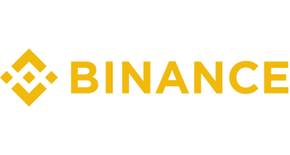
推荐您使用币安交易所
币安是全球领先的加密货币交易平台，提供现货、合约、期权等多种交易服务，日交易量位居全球前列。支持数百种数字资产交易，为全球超过 2 亿用户提供服务。
币安交易所拥有行业领先的安全防护体系，SAFU 用户保护基金超 10 亿美元，保障用户资产安全。同时提供理财、杠杆、流动性挖币等丰富的金融产品，满足不同用户的投资需求。
跨链桥
多链 ↔ NEOC 资产跨链
NRY / NUSD
NEOC 公链 · 实时
数据来源：NEOC 官方行情配置
数据由后台表格配置，约每分钟同步一次
更新时间 --:--:--
交易
NRY / NUSD 即时兑换
NEO AI
NEO 生态智能助手
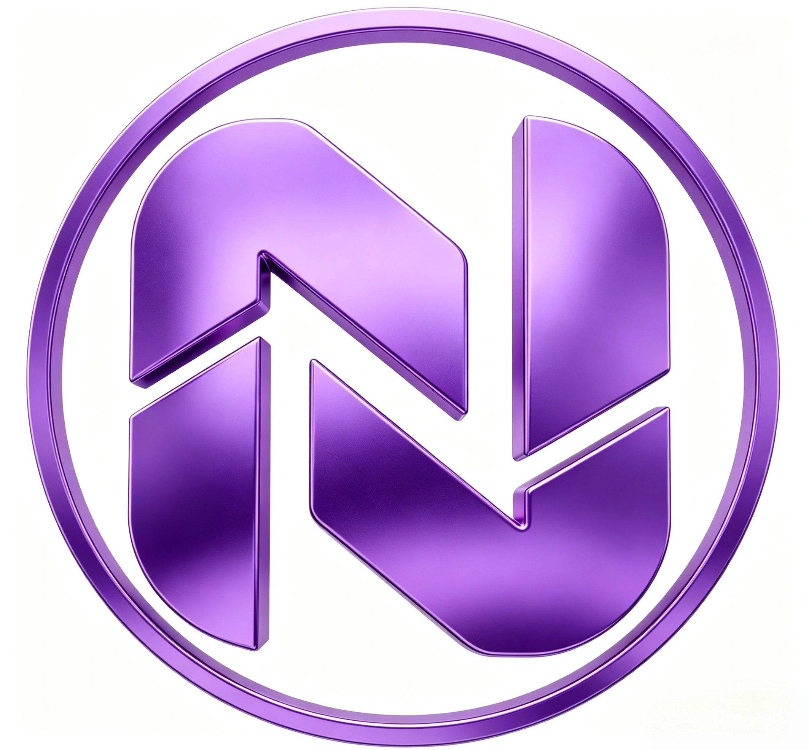
AI 算力矩阵 · 联合打造算力交易市场
全球首创链上算力交易体系 · 让算力像水电一样自由流通
24h
不间断交易
100%
清洁能源
<10ms
撮合延迟
NEO 买卖
数据对接中挂单交易 · 链上撮合 · 实时结算
可用余额：0.00
卖单（高价→低价）
买单（高价→低价）
最近成交
算力交易
提供算力方 · 租赁算力方 · 个人与企业均可参与
提供算力方
将闲置 GPU/ASIC/超算资源上链挂单，按算力规格与时长灵活定价，自动结算收益。支持个人矿工、矿场、超算中心、企业级算力供应商。
- 灵活定价 · 自由挂单
- 链上自动结算 · 收益透明
- 闲置算力 · 即挂即赚
租赁算力方
按需租用全球清洁能源算力，秒级下单、链上撮合、自动交付。覆盖 AI 训练、大模型推理、科学计算、渲染等场景，个人开发者与大型企业均可参与。
- 按需租用 · 秒级下单
- 全球清洁能源算力
- AI 训练 / 推理 / 渲染通用
算力挂单
全球首创交易市场
NEO 首创将算力、代币与大模型训练权统一资产化，构建全球第一个去中心化算力交易市场，让闲置算力秒级变现。
全球首创链上算力交易体系
链上撮合、链上结算、链上交付。从挂单、匹配、支付到算力交付全程智能合约执行，公开透明、不可篡改。
全球最强大的清洁能源算力
依托西伯利亚极寒气候与天然水电，联合 Yandex 顶级超算集群，构建零碳、高稳定、可无限扩展的清洁能源智算中心。
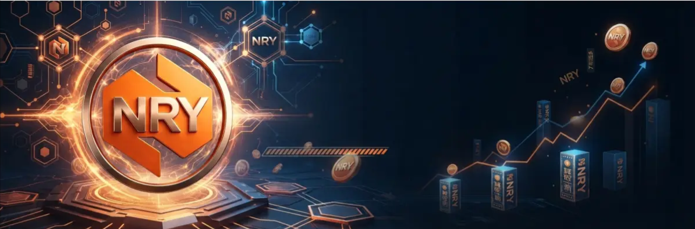
NRY股东
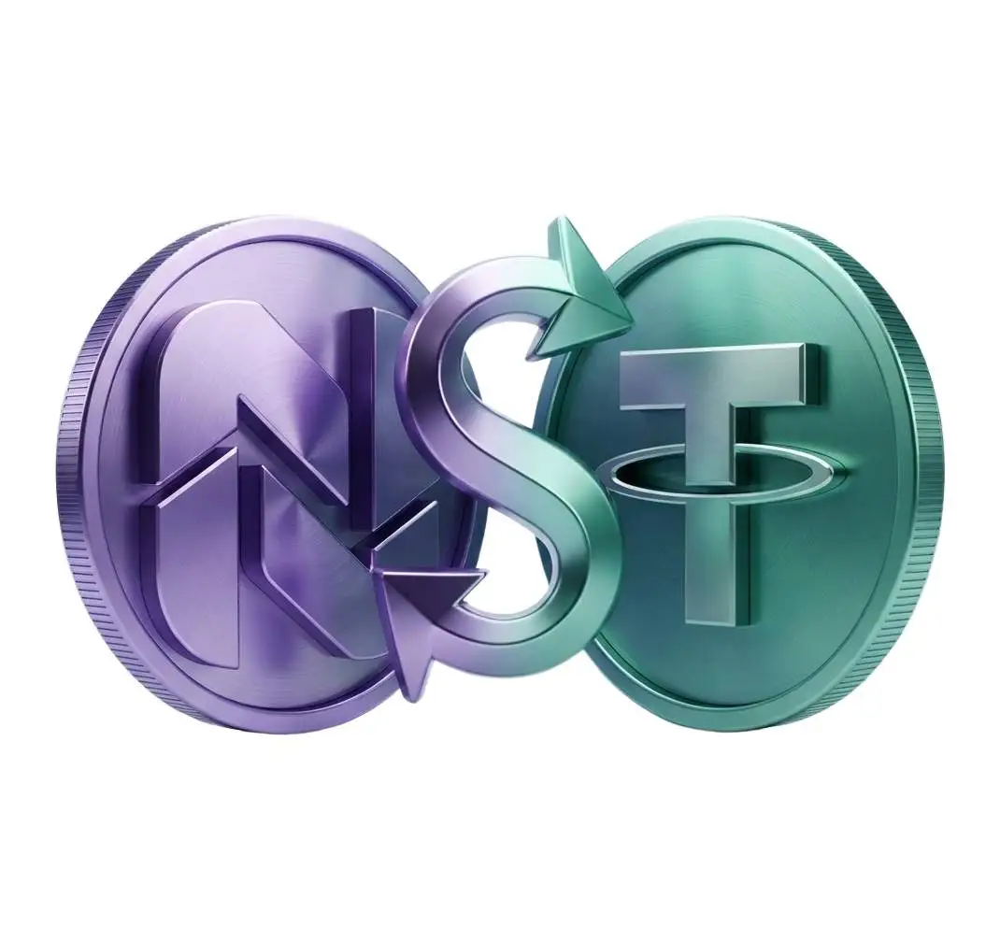
质押 NEO-USDT LP 凭证，赚取 NRY 奖励，奖励按区块实时累计，可随时提取。
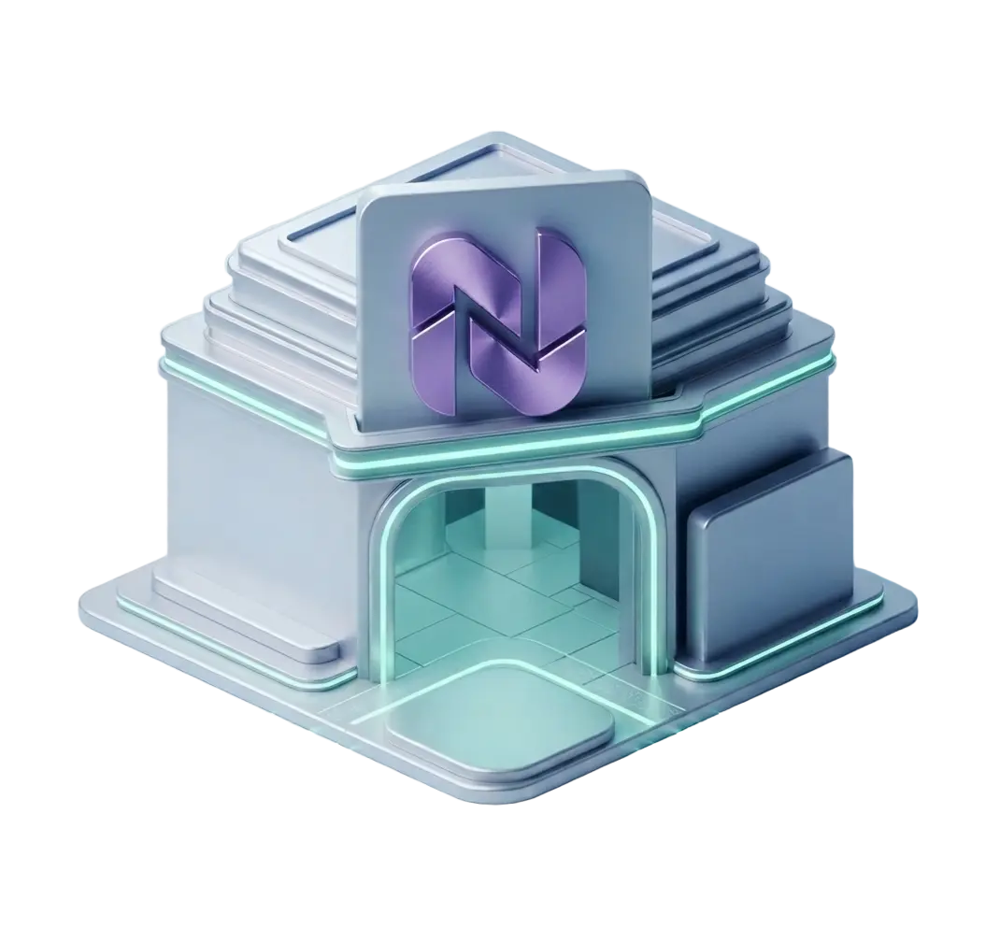
将资产存入链上银行，AI 公司直接租赁您的算力，收益每日结算，资产随存随取。
我的身份
--我的持有
0.000000 NRY社区权重
0%分红比例
--%我的团队
直推人数
0
直推业绩
$ 0
间推业绩
$ 0
团队业绩
$ 0
Studio Subsidy
姓名
--
年龄
--
工作室电话
--
工作室地址
--
工作室补助
$ 0
当月新增业绩
$ 0
ARTIFICIAL INTELLIGENCE · COMPUTING POWER
AI 算力全景知识手册
从概念到产业，从机房到 CaaS —— 一份系统梳理人工智能算力公开知识的参考手册
从概念到产业，从机房到 CaaS一份系统梳理人工智能算力公开知识的参考手册
概念 · 场景 · 建设 · 商业 · CaaS
| 文档信息 |
| 知识整理类参考资料 |
目录
- 前言
- 第一章 AI算力的概念
- 第二章 AI算力的使用场景
- 第三章 机房建设及成本
- 第四章 商业机会
- 第五章 CaaS 算力即服务
- 第六章 总结与展望
- 附录
执行摘要
| 概念 | 场景 | 建设 | 商业 | CaaS |
| 训练 / 推理专用算力 | 从训练主导转向推理主导 | GPU 占投资 60%–70% | 供需缺口扩大、量价齐升 | OPEX 替代 CAPEX |
AI 算力是人工智能时代的底层基础设施与核心生产力。本手册系统梳理其概念与度量、训练与推理两大使用场景、智算中心机房建设与成本结构、产业链商业机会与竞争格局，以及算力即服务（CaaS）的模式演进，为技术、商业与决策读者提供一份全面的公开知识参考。
前言
2022 年底 ChatGPT 问世以来，一场以大模型为核心的人工智能浪潮席卷全球。Gemini、文心一言、通义千问、Kimi、Sora 等大模型相继涌现，AI 从实验室走向千行百业。在这场变革中，算力被称为人工智能的"发动机"与核心生产力——没有算力，再先进的算法也只能停留在论文里；有了算力，人工智能才能真正落地。
算力已被提升到与水利、电网、铁路同等重要的国家战略基础设施地位。理解 AI 算力，已不只是技术人员的事，而是创业者、投资者、政企决策者都需要掌握的基础认知。
本手册围绕五个核心维度展开：概念、使用场景、机房建设及成本、商业机会、CaaS（算力即服务），力求全面、系统、可读。
第一章 AI算力的概念
理解 AI 算力，需要先从"算力"这一基础概念出发，逐步厘清它的度量方式、分类体系、硬件载体与产业链结构。本章为后续所有章节的讨论奠定基础。
1.1 什么是算力，什么是 AI 算力
算力（Computing Power），通俗讲就是设备或系统"处理数据、完成计算任务的能力"。手机、电脑、服务器、数据中心，本质上都是不同形态的"算力机器"。
广义算力：集信息计算力、网络运载力、数据存储力于一体，包含硬件、网络、存储、调度系统，是完整的数据处理服务能力。
狭义算力：通常指 CPU、GPU 等芯片的计算能力。
AI 算力（智能算力） 是专门面向人工智能任务（训练与推理）的高性能计算能力，核心由 GPU、NPU、TPU、ASIC 等 AI 芯片提供。它强调高并行、高吞吐、低延迟，区别于以串行逻辑处理见长的通用 CPU 算力。
形象类比：把大模型比作"工厂"，数据是"原料"，算法是"生产工艺"，那么算力就是驱动整座工厂运转的"电力"。电力不足，再好的工艺也无法生产。
1.2 算力如何衡量：核心单位
算力最通用的度量指标是 FLOPS（每秒浮点运算次数）。由于 AI 计算多在低精度下进行，推理场景也常用 TOPS（每秒万亿次整数/定点运算）。
| 单位 | 含义 | 量级 | 典型适用对象 |
| FLOPS | 每秒 1 次浮点运算 | 10⁰ | 基础单位 |
| MFLOPS | 每秒百万次 | 10⁶ | 早期设备 |
| GFLOPS | 每秒十亿次 | 10⁹ | 老式显卡 |
| TFLOPS | 每秒万亿次 | 10¹² | 显卡、 AI 芯片常用 |
| PFLOPS | 每秒千万亿次 | 10¹⁵ | 智算集群、超算 |
| EFLOPS | 每秒百亿亿次 | 10¹⁸ | 国家算力中心、超大集群 |
几个直观参照：普通手机约为几至几十 TFLOPS；高端游戏显卡约 80–200 TFLOPS；国家级超算峰值可超 1 EFLOPS。需要注意的是，峰值算力不等于有效算力——实际性能还受内存带宽、I/O、互联延迟等因素制约。
1.3 三大算力类型
| 类型 | 主要硬件 | 典型用途 | 特点 |
| 基础算力（通用算力） | CPU | 日常办公、网页、企业通用业务 | 通用性强，擅长逻辑处理， AI 运算效率低 |
| 智能算力（ AI 算力） | GPU 、 NPU 、 TPU 、 ASIC | 大模型训练 / 推理、人脸识别、自动驾驶、推荐系统 | 擅长并行计算，专为 AI 算法优化，当前最热门 |
| 超算算力（高性能算力） | 大规模 CPU+ 加速卡集群、超级计算机 | 气象预报、航天航空、核模拟、生物医药、尖端科研 | 算力极致，专用于国家级高精尖科学计算 |
对应的数据中心形态分别是：通用数据中心、智算中心（AIDC）、超算中心。按服务部署形态，算力还可分为：公有云算力、私有云算力、混合云算力、边缘算力。
1.4 AI 算力的硬件载体：芯片"铁三角"
- GPU（图形处理器）——训练主力。拥有数千核心，擅长大规模并行矩阵运算。代表：英伟达 A100/H100/B200、AMD MI300X。CUDA 生态是英伟达最深的护城河。
- NPU / TPU / ASIC——推理能效之王。专为神经网络优化。代表：华为昇腾、寒武纪思元、谷歌 TPU、亚马逊 Trainium。
- CPU——通用控制与串行计算。承担任务调度与辅助工作。
配套的关键硬件还包括：HBM 高带宽存储（AI 芯片性能的关键瓶颈，主要由 SK 海力士、三星、美光供应）、高速光模块（800G/1.6T 是集群互联核心，中际旭创、新易盛等中国厂商地位突出）、高速互联（NVLink、InfiniBand）等。
1.5 AI 三要素：算力、算法、数据
数据是原料——需要被处理的海量信息；
算力是动力——处理数据的能力；
算法是方法——处理数据的规则逻辑。
三者缺一不可。算法效率提升（如 MoE 稀疏架构、模型蒸馏、低精度量化）也会反过来降低单位任务的算力需求。
1.6 AI 算力产业链结构
上游：芯片与硬件 ├─ AI芯片（GPU/ASIC/NPU）、HBM存储、光模块 ├─ 服务器整机、交换机、网络设备 └─ 供配电、制冷（风冷/液冷）等配套 ↓中游：智算集群与云服务 ├─ 智算中心（AIDC）建设与运营 ├─ 算力互联互通平台、算力调度 └─ GPU 云 / AI IaaS 算力租赁服务 ↓下游：行业应用 ├─ 大模型训练与推理 └─ 智能制造、自动驾驶、金融科技、医疗AI、政务、科研等
一个关键规律：利润沿着"芯片—算力基础设施—大模型—行业应用"逐级递减。芯片成本在 Token 成本中占比达 40%–55%，基础设施投入占 15%–20%——这决定了产业链利润池的大头天然沉淀在上游。
1.7 发展历程简述
| 阶段 | 时期 | 核心特征 |
| CPU 起步 | 2000 年以前 | 以 CPU 为主，算力服务于科研与重大工程 |
| GPU 加速 | 2000 年代中期 –2010 年代 | 2012 年 AlexNet 借 GPU 突破，深度学习爆发 |
| 异构计算与密度 | 2020 年代初 | 从 " 摩尔定律 " 转向 " 密度法则 " ， CPU+GPU+XPU 异构架构 |
| 超节点与集群 | 2023 年至今 | 从千卡向万卡、十万卡集群演进，云 - 边 - 端协同 |
| 推理主导与绿色算力 | 2025 年及以后 | 从训练主导转向推理主导，液冷与绿色低碳成为重点 |
第二章 AI算力的使用场景
AI 算力的应用可归为训练与推理两大基本场景，并由此延伸到千行百业。
2.1 两大基本场景：训练与推理
| 维度 | 训练算力（重算力） | 推理算力（轻算力、高并发） |
| 任务 | 大模型预训练、微调、参数迭代 | 模型部署后的实时调用、内容生成 |
| 规模 | 千卡 / 万卡级集群，单体规模大 | 分布式、碎片化， 7×24 持续调用 |
| 要求 | 高算力密度、高带宽互联 | 低延迟、高吞吐、高能效 |
| 主导硬件 | 高端 GPU （ H100/B200 等） | NPU 、低功耗 GPU 、推理专用芯片 |
| 趋势 | 占比下降但单体需求刚性 | 占比快速上升，成为增长核心 |
结构性变化：2025 年中国 AI 服务器市场中，推理服务器占比已达 67%，训练占 33%；IDC 预测到 2029 年推理算力占比将接近八成。2026 年全球推理算力占 AI 总负载的 70%–80%，中国推理需求约为训练的 8 倍。行业重心正从"训练主导"转向"推理主导"。
2.2 大模型训练与推理
这是当前 AI 算力最核心的需求来源。GPT-4 的训练算力约为 GPT-3 的 10 倍，需数万张高端 GPU、兆瓦级功耗。随着 DeepSeek 等开源模型凭借"开源、成本低、性能高"出圈，推理算力需求出现结构性爆发——国内日均大模型 Token 调用量突破 140 万亿，对比 2024 年初实现千倍级增长。
2.3 重点行业应用
自动驾驶：感知模型训练与海量路况仿真。小鹏与阿里云在乌兰察布合建"扶摇"智算中心算力达 600 PFLOPS；华为为理想汽车定制专属智算集群。
医疗健康：医学影像辅助诊断、药物研发、中医药大模型。消化内镜 AI 辅助诊断使微小病灶检出率提升 10%–30%。
金融科技：智能风控、反欺诈、量化交易与投顾。银行用 GPU 集群做蒙特卡洛模拟与风险评级。
智能制造：工业质检、预测性维护、数字孪生。工厂用视觉模型检测产线缺陷。
科研与科学计算：气象预报、新药研发、材料科学、宇宙模拟。"巢湖明月"支撑 EAST 人造太阳仿真，累计支撑 3000 余个科研项目。
智慧政务与城市治理：城市大脑、政务大模型、隐患排查。河北人工智能计算中心已孵化 170 多个场景解决方案。
互联网与内容：推荐系统、AIGC 内容生成、影视渲染。
2.4 需求侧信号
2026 年一季度国内 AI 算力需求同比大增 417%，而有效供给增速仅 128%，供需缺口持续扩大。
中国大模型周调用量已连续多周超过美国，OpenRouter 数据显示中国模型全球份额约 63.5%。
字节、腾讯、阿里等四大云厂商 2026 年资本开支合计预计同比增长超 80%。
第三章 机房建设及成本
智算中心（AIDC）是承载 AI 算力的物理底座。与传统数据中心相比，它"不是堆设备，而是堆冗余；最终拼的是运维体系"。
3.1 智算中心 vs 传统 IDC
| 维度 | 传统 IDC | 智算中心（ AIDC ） |
| 核心定位 | 机柜、物理服务器托管 | 高性能算力交付 |
| 单机柜功率 | 4–10 kW | 25–80 kW （训练机柜可达 58.8 kW ） |
| 计算密度 | 低 | 极高，机柜区域功率密度 3000–8000 W/㎡ |
| 制冷方式 | 风冷为主 | 液冷成为新建标配 |
| 投资构成 | 土建 + 机电为主 | GPU 服务器占大头 |
3.2 机房建设的核心构成
- IT 硬件：GPU/AI 服务器、存储、网络设备（交换机、光模块）。
- 供配电系统：高压配电、变压器、UPS、蓄电池、备用发电机、巴拿马电源。
- 制冷系统：冷水机组、冷却塔、精密空调，以及冷板/浸没液冷系统。
- 土建与配套：机房楼、机柜、防静电地板、消防、监控与动环系统。
- 软件与调度：集群管理、算力调度平台、AI 框架与开发环境。
设计与验收遵循 GB 50174-2017（A/B/C 三级）、GB 51195-2016 等标准，可选用 Uptime Tier、CQC A 级、等保 2.0 三级等认证。
3.3 液冷：从可选项到必选项
随着单机柜功率突破 20kW，传统风冷已难以为继，液冷成为新建智算集群的标配。
| 对比维度 | 冷板式液冷 | 浸没式液冷 |
| 散热原理 | 冷板接触 CPU/GPU 间接换热 | 服务器全浸没于绝缘冷却液直接换热 |
| PUE 范围 | 1.15–1.25 | 1.03–1.10 |
| 功率密度 | 最高约 50 kW/ 机柜 | 最高 200 kW+/ 机柜 |
| 兼容性 | 兼容现有服务器，改造量小 | 需定制硬件 |
| 市场成熟度 | 约 90% 份额，主流路线 | 规模化应用初期 |
| 单机柜投入 | 8–12 万元 | 30–40 万元（ 3–4 倍） |
政策层面，新建大型/超大型数据中心 PUE 红线普遍要求 ≤1.25（国家枢纽节点 ≤1.2），绿电占比超 80%，"东数西算"枢纽节点液冷渗透率要求不低于 60%。
3.4 核心指标
PUE（电源使用效率）：总能耗 / IT 设备能耗，越接近 1 越节能。全国平均已降至约 1.42，先进项目可低至 1.1–1.15。
上架率：已投入使用机柜占比。全国平均约 71%，但部分智算中心实际利用率偏低。
利用率：GPU 平均利用率约 30%–40%，存在明显的"算力孤岛"与资源闲置。
盈亏平衡上架率：约 40%。低于此线，项目容易亏损。
3.5 成本结构拆解
智算中心的投资结构与普通建筑项目正好"倒挂"：
| 成本项 | 占比 |
| GPU 服务器（含加速卡） | 60%–70% （部分口径 60%–80% ） |
| 供配电 + 制冷 | 20%–25% |
| 土建 + 其他 | 5%–10% |
几个建设成本参考（不同口径差异较大，仅作量级参考）：
单机柜平均投资成本约 20 万元（通用口径）；含高端 GPU 的智算单柜可达 300 万–500 万元。
基础设施单位成本约 1 万–1.5 万元/kW；通用机房每 kW 造价约 5 万元。
一个 100 机柜、6kW/柜的项目总投资约 1500 万元；500 机柜、8kW/柜约 6000 万元。一线城市成本上浮 20%–30%。
1GW 级数据中心端到端建设成本，海外估算约 346 亿–395 亿美元。
业内经验：数据中心建设不是堆设备，是堆冗余；不是堆冗余，是堆可维护性；最终拼的是运维体系。
3.6 选址与"东数西算"
能源约束正刚性化：大型数据中心需要靠近 110kV 以上、冗余度高的电源点。"东数西算"工程把集群布局在西部枢纽，本质是用绿电资源与气候条件框定选址。截至 2026 年，全国形成"8 大国家算力枢纽 + 10 个国家算力集群 + 3 个算电协同区域"的空间布局；东部、中部、西部、东北智算规模占比约为 55.9%、10.6%、32.6%、0.9%。
第四章 商业机会
AI 算力正处于爆发式增长期，从芯片到应用，各环节都孕育着商业机会。
4.1 市场规模与增长
| 细分市场 | 规模数据 |
| 中国智能算力规模 | 2024 年 725.3 EFLOPS → 2028 年 2781.9 EFLOPS （ CAGR 46.2% ） |
| 中国 AI 服务器市场 | 2024 年 1606.55 亿元 → 2026 年预计 3500 亿元 |
| 中国智算云基础设施 (AI IaaS) | 2025 年 486.7 亿元，同比 +128% |
| 中国 AIDC 市场 | 2026 年预计 1778 亿元， 2030 年近 4000 亿元 |
| 中国算力租赁市场 | 2026 Q1 达 680 亿元，全年预计突破 2600 亿元 |
| 全球算力市场 | 2025 年超 4200 亿美元， 2030 年 1.2 万亿美元 |
| 全球 AI 资本开支 | 瑞银预计 2026 年约 9980 亿美元，同比近翻倍 |
"十五五"时期，全国一体化算力网建设预计新增直接投资 4 万亿元，算力新基建成为确定性最强的投资主线之一。
4.2 产业链利润分布与机会方向
由于利润沿产业链逐级递减，商业机会呈现差异化特征：
- 上游芯片与硬件——技术壁垒与附加值最高。AI 芯片、HBM 存储、高速光模块、液冷方案是价值高地；国产替代是主线。
- 中游算力基础设施与云服务——国产替代最活跃。智算中心建设、算力调度平台、GPU 云、AI IaaS 增长迅猛。
- 下游行业应用——从"训练"走向"用"，商业化刚刚起步，空间广阔。
4.3 值得关注的具体机会
算力租赁 / CaaS：供需缺口扩大，量价齐升，高端训练算力"一卡难求"。
国产算力替代：英伟达中国份额从 2022 年约 95% 降至 2026 年约 8%，华为昇腾以约 50% 领跑，国产厂商合计份额首破 45%。
液冷与绿色节能：PUE 硬约束下，冷板/浸没液冷、余热回收、绿电交易成为刚需。
算力调度与互联互通：工信部"1+M+N"算力互联互通体系、算力超市、算力银行等集约化运营模式。
行业大模型与推理服务：开源模型降低门槛，中小企业轻量化用算需求爆发，多地发放"算力券"补贴。
数据合规与信创适配：《数据安全法》《网络安全法》要求下，数据本地化、等保三级、国产化适配成为核心壁垒。
4.4 竞争格局
海外：英伟达在训练芯片领域占绝对优势（约 68% 全球份额），CUDA 生态构成护城河；CoreWeave、Nebius、Lambda Labs 等新型 AI 云崛起——CoreWeave 2026 Q2 收入 25.8 亿美元（同比 +112%），长期合同储备达 1040 亿美元。
国内算力租赁四大阵营：
| 阵营 | 代表 | 特点 |
| 公有云巨头 | 阿里云、腾讯云、火山引擎 | 占约 65% 收入份额，自有万卡集群 |
| 三大运营商 | 电信、移动、联通 | 依托东数西算节点，政企订单稳定，占 25%–30% |
| 专业上市公司 | 利通电子、协创数据、行云科技、宏景科技等 | 绑定大厂长协，业绩快速兑现 |
| 第三方 IDC 厂商 | 各类机房服务商 | 提供机柜托管，多与专业算力企业合作 |
四大阵营合计市占约 90%–95%。头部企业毛利率约 45%–53%（高毛利）或 25%–35%（中等），核心差异在卡源资质、长协能力与液冷降本能力。
4.5 风险与挑战
供应链风险：高端 GPU 依赖海外供给，出口管制与断供可能冲击产能扩张。
技术迭代贬值：GPU 更新周期缩短，旧卡租金与资产价值面临减值压力。
利用率风险：大量智算中心利用率偏低（约 20%–37%），存在空置与亏损风险。
合规风险：跨境数据、模型训练、等保要求带来的业务约束。
需求替代风险：ASIC 专用芯片、高效算法（MoE、蒸馏、量化）可能削弱长期算力需求增速。
第五章 CaaS 算力即服务
5.1 什么是 CaaS
CaaS（Compute/Computing as a Service，算力即服务） 是一种以"算力即服务"为核心的模式：拥有算力基础设施的服务商，将搭载 GPU、CPU 等高性能芯片的服务器资源通过云化方式，以按需付费、弹性租用的形式出租给有 AI 训练、推理或高性能计算需求的客户。
其本质是以运营支出（OPEX）替代资本支出（CAPEX）——客户无需自建机房、一次性大额采购硬件，即可弹性获取算力。算力租赁行业因此被称为 AI 时代的"算力电厂"，是连接上游硬件与下游 AI 应用的核心桥梁。
5.2 服务形态与交付模式
按硬件类型：CPU 通用算力、GPU 主流 AI 算力、DCU/NPU 国产自主算力、ASIC 专用芯片。按交付形态：
| 形态 | 说明 | 适用场景 |
| 整机独占租赁 | 服务器资源完全独享，无争抢 | 长期大模型训练 |
| 裸金属算力服务 | 去除虚拟化层，物理算力直接交付 | 低延迟、高稳定性需求 |
| 云算力弹性实例 | 虚拟化资源池，秒级启停扩缩 | 短期实验、临时推理 |
| 机房托管运维 | 客户自有硬件，服务商提供机柜、电力、运维 | 有自研硬件的客户 |
5.3 计费模式的演进
行业商业模式正经历从"卖资源"到"卖价值"的升级：
- 按时长出租裸算力——单一租金收益（早期）。
- 长协包年/包月——3–5 年大额框架长协，锁定稳定现金流（当前主流）。
- Token 收益分成 / 峰谷阶梯定价 / 算力融资租赁——按模型 Token 调用量收费，甚至项目收益分成，实现风险共担（行业变革方向）。
里程碑式转变：产业逻辑从"售卖硬件资源"转向"共享业务价值"。例如 CoreWeave 联合 AI 应用公司采用 Token 按量计费；国内百度智能云联合文旅 AI 企业试点按变现营收分成。
5.4 平台技术架构
异构高密硬件层：GPU、DCU、NPU 多类型芯片协同；
全域智能调度层：跨地域、跨品牌算力统一管理与动态分配；
高速低时延网络：高带宽算力专网，保障海量数据传输；
绿色能效管控：液冷散热、智能温控，持续降低 PUE；
云边协同架构：算力向边缘下沉，满足实时推理需求。
全球算力平均利用率仅 30%–40%，智能调度的价值正在于"在不增加硬件采购的前提下提升利用率、降低单位算力综合成本"。
5.5 代表玩家
公有云/AI 云：阿里云、华为云、百度智能云、火山引擎、AWS、Google Cloud、CoreWeave、Lambda Labs。
专业算力服务商：并行科技、呼呼智算（自研 CaaS 弹性调度平台）、数商云等。
国产算力生态：适配昇腾、寒武纪、燧原、海光等国产芯片，服务政务、金融等信创场景。
5.6 选择平台的考量因素
- 性能匹配：训练选 H100/H200 等高端卡，推理可选 T4/国产 NPU；
- 成本模型：长期项目优先包年折扣，短期实验采用竞价/弹性实例；
- 服务稳定性：关注 SLA（建议 ≥99.9%）与 7×24 运维能力；
- 技术支持：AI 框架预装、故障响应速度；
- 合规性：数据存储位置、加密方案、信创适配是否符合行业法规。
5.7 未来趋势
计费革新：从"售卖算力时长"全面转向"按 Token 业务价值计费"；
国产替代：形成"高端训练用英伟达 + 推理用国产"的异构格局；
算网协同：算力调度与高速专网一体化成为核心竞争力；
生态化运营：从单一租赁走向"算力平台 + 行业应用"完整生态；
绿色低碳：液冷机房、可再生能源成为新建智算中心硬性要求；
边缘租赁兴起：低时延边缘算力支撑自动驾驶、本地实时推理。
第六章 总结与展望
AI 算力是人工智能时代的底层基础设施与核心生产力。回顾全文，可归纳为六点核心认知：
- 概念层面：AI 算力是面向训练/推理的专用计算能力，以 FLOPS/TOPS 度量，由 GPU/NPU/TPU 等芯片提供，与数据、算法共同构成 AI 三要素。
- 应用层面：需求正从"训练主导"转向"推理主导"，并向自动驾驶、医疗、金融、制造、科研等行业深度渗透。
- 建设层面：智算中心投资高度集中于 GPU 服务器（60%–70%），液冷与绿色节能成为新标配，PUE 与利用率是关键运营指标。
- 商业层面：市场规模高速增长、供需缺口扩大，利润池集中在产业链上游，国产替代与 CaaS 是最确定的机会主线。
- 模式层面：CaaS 以 OPEX 替代 CAPEX，计费从按时长走向按 Token/价值分成，是算力普惠化的关键路径。
- 风险层面：供应链管制、技术迭代贬值、利用率偏低与合规要求，是需要持续关注的挑战。
放眼未来，随着全国一体化算力网的推进、国产算力的成熟与推理需求的爆发，算力将像水电一样成为随处可得的基础资源。能够提供高效、弹性、安全可信的一体化算力服务的企业，将牢牢掌握 AI 时代的产业主动权。
附录
附录 A 关键数据速查表
| 指标 | 数值 | 口径 / 时点 |
| 中国智能算力规模 | 2185 EFLOPS (FP16) | 工信部， 2026-06 |
| 中国 AI 服务器市场 | 约 3500 亿元 | 2026 预测 |
| 中国算力租赁市场 | 突破 2600 亿元 | 2026 预测 |
| 中国 AIDC 市场 | 1778 亿元 | 2026 预测 |
| 推理算力占比 | 67% （服务器） / 近 80% （ 2029 预测） | IDC |
| 智算中心 GPU 服务器成本占比 | 60%–70% | 行业拆解 |
| 新建大型数据中心 PUE 红线 | ≤1.25 | 政策要求 |
| H100 一年期租赁价 | 约 2.35 美元 / 卡时 | 2026-03 |
| 英伟达中国市场份额 | 由约 95% 降至约 8% | 2022→2026 |
| 国产算力芯片合计份额 | 首破 45% | 2026 |
附录 B 术语表
| 术语 | 全称 / 含义 |
| FLOPS | 每秒浮点运算次数，算力核心度量单位 |
| TOPS | 每秒万亿次（定点 / 整数）运算，常用于推理 |
| EFLOPS / PFLOPS | 每秒百亿亿次 / 千万亿次浮点运算 |
| GPU / NPU / TPU / ASIC | 图形 / 神经网络 / 张量处理器 / 专用集成电路 |
| HBM | 高带宽存储器， AI 芯片关键配套 |
| AIDC | 人工智能数据中心（智算中心） |
| PUE | 电源使用效率，衡量数据中心能效 |
| AI IaaS | AI 基础设施即服务 |
| CaaS | 算力即服务（ Compute as a Service ） |
| Token | 大模型处理文本的基本单位，新型计费基准 |
| 东数西算 | 将东部算力需求引导到西部枢纽的国家工程 |
| 液冷（冷板 / 浸没） | 通过液体为服务器散热的技术路线 |
| SLA | 服务等级协议，衡量服务稳定性 |
免责声明：本手册内容整理自公开资料，旨在提供系统性的知识参考。文中数据因来源与统计口径不同可能存在差异，请以官方最新发布为准。本手册不构成任何投资、采购或决策建议。
BLOCKCHAIN · TECHNOLOGY MAP
区块链核心知识手册
从概念到公链开发 —— 系统梳理概念 / 术语 / 共识 / 开发 / 生态
| TL;DR |
| 本手册系统梳理区块链的基础概念与常用术语，深入讲解哈希、挖矿算力单位、PoW/PoS 等共识机制，并介绍如何从零开发一条公链，以及 EVM 链与非 EVM 链的区别。面向希望建立完整区块链知识框架的初学者与开发者。 |
目录
- 1. 区块链基础概念
- 2. 常用术语速查
- 3. 哈希值与哈希函数
- 4. 挖矿与算力单位
- 5. 共识机制：PoW、PoS 及其他
- 6. 智能合约与虚拟机
- 7. EVM 链与非 EVM 链
- 8. 如何从零开发一条公链
- 9. 常见误区与总结
- 10. 延伸阅读与参考来源
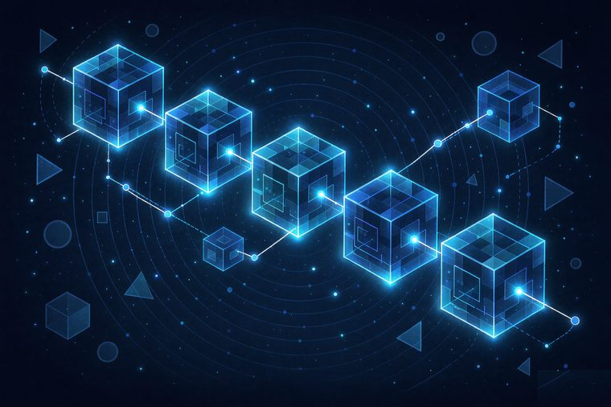
本章从最基础的定义出发，解释区块链是什么、它具备哪些核心特征，以及一个区块的内部结构，帮助读者建立整体认知框架。
1.1 什么是区块链
区块链（Blockchain）本质上是一种分布式账本技术（DLT）：数据被打包成一个个"区块"（Block），每个区块按时间顺序通过密码学方式链接成一条"链"（Chain），并由网络中众多节点共同维护，而非由某个中心化机构独占。
可以用一个通俗的比喻理解：传统记账像"村里只有村长一人记账"，账本集中在村长手里；区块链则像"全村每个人都记一份账"，任何一笔交易都要广播给所有人、经大家共同确认后才写入账本。因此 blockchain 常被称为"去中心化的公共账本"。
2008 年，化名"中本聪"的人发表比特币白皮书，区块链作为比特币的底层技术诞生。区块链与比特币的关系是：区块链是比特币的技术支撑，比特币是区块链的第一个应用。此后区块链经历了三个发展阶段：
- 第一阶段（2008—2013）：以比特币为代表的加密货币阶段；
- 第二阶段（2014—2017）：以以太坊诞生为标志的智能合约阶段；
- 第三阶段（2017 至今）：高性能公链、Layer 2、跨链、DeFi/NFT 等多元化生态阶段。
1.2 核心特征
| 特征 | 含义 |
| 去中心化 | 没有单一中心机构控制，数据由全网节点共同维护 |
| 不可篡改 | 数据一旦写入，修改需同时改写后续所有区块并控制多数节点，成本极高 |
| 可追溯 | 每笔交易带时间戳并按顺序链接，全过程留痕、可审计 |
| 公开透明 | 链上数据对参与者公开（公链场景），规则与结果可验证 |
| 集体维护 | 节点通过共识机制共同记账，无需信任单一第三方 |
| 高可靠 | 数据冗余存储在大量节点，个别节点故障不影响系统运行 |
1.3 区块的结构
一个典型区块由两部分组成：
- 区块头（Block Header）：包含版本号、时间戳、前一区块哈希、默克尔根（Merkle Root）、随机数（Nonce）、难度目标等元数据；
- 区块体（Block Body）：包含该区块打包的具体交易列表。
其中"前一区块哈希"写入区块头，是形成链式结构、保证不可篡改的关键：一旦某历史区块数据被改动，其后所有区块的哈希都会对不上，改动立即被网络发现。
2. 常用术语速查
| 术语 | 英文/缩写 | 简要解释 |
| 节点 | Node | 运行区块链客户端、参与数据存储与验证的计算机 |
| 区块 | Block | 打包一批交易的数据结构，是账本的"一页" |
| 创世区块 | Genesis Block | 链上第一个区块，所有区块的起点 |
| 共识机制 | Consensus | 节点之间就账本状态达成一致的规则（如 PoW、PoS） |
| 矿工 | Miner | 在 PoW 网络中通过算力竞争出块并获得奖励的角色 |
| 验证者 | Validator | 在 PoS 网络中通过质押代币来验证并出块的角色 |
| 质押 | Staking | 锁定一定数量的代币作为担保以参与共识 |
| 双花 | Double Spending | 同一笔数字资产被重复花费的问题，共识机制要解决的核心难题 |
| 51% 攻击 | 51% Attack | 攻击者掌握全网超过一半算力/权益，试图重写链历史 |
| Gas | Gas | 衡量链上操作计算工作量的单位，用于计价手续费 |
| 智能合约 | Smart Contract | 部署在链上、可自动执行的代码程序 |
| 代币 | Token | 基于区块链发行的代币，常见标准如 ERC-20、ERC-721 |
| 钱包 | Wallet | 管理私钥/公钥、签名交易的工具 |
| 私钥 / 公钥 | Private / Public Key | 非对称密钥对：私钥保密用于签名，公钥可公开用于验证与收款 |
| 地址 | Address | 由公钥推导出的收款标识，类似银行账号 |
| DApp | Decentralized App | 基于区块链的去中心化应用 |
| 分叉 | Fork | 协议规则变更导致链产生分叉，分硬分叉与软分叉 |
| Layer 2 | L2 | 建立在主链（L1）之上的扩容方案，如 Rollup、状态通道 |
| 跨链 | Cross-chain | 实现不同区块链之间资产与信息互通的技术 |
注：账户模型上，比特币采用 UTXO（未花费交易输出）模型，以太坊采用账户余额模型；二者是两类主流的状态记录方式。
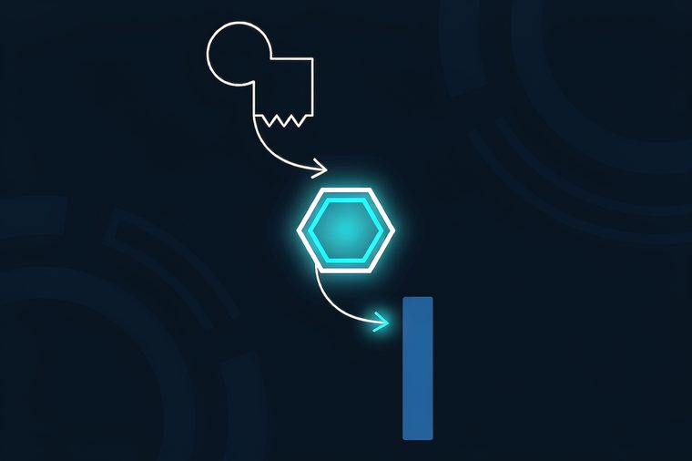
哈希是区块链最底层的密码学基石。本章讲解哈希值的定义与特性，并说明它如何支撑区块链接、数据完整性验证与挖矿。
3.1 什么是哈希值
哈希值（Hash Value，又称散列值、数字指纹）是把任意长度的数据，通过公开的哈希算法（如 SHA-256、Keccak-256）计算后得到的固定长度字符串。可以把它理解为数据的"身份证号"或"指纹"：数据只要有一点点变化，哈希值就会完全不同。
例如，SHA-256 的输出固定为 256 位（64 个十六进制字符）：
- 输入 hello → 2cf24dba5fb0a30e26e83b2ac5b9e29e1b161e5c1fa7425e73043362938b9824
- 输入 Hello（仅首字母大小写不同）→ 得到完全不同的哈希值。
3.2 密码学哈希函数的特性
一个适合区块链使用的密码学哈希函数应具备：
- 确定性：相同输入永远得到相同输出；
- 单向性（不可逆）：由输入算哈希容易，由哈希反推输入在计算上不可行；
- 抗碰撞性：极难找到两个不同输入产生相同哈希值；
- 雪崩效应：输入微小改动会导致输出巨大差异；
- 快速计算：给定输入能迅速算出哈希。
3.3 哈希在区块链中的作用
- 标识与链接区块：区块 ID、交易 ID 都是哈希值；把前一区块哈希写入当前区块头，形成不可篡改的链式结构；
- 默克尔树（Merkle Tree）：把区块内交易两两哈希、层层汇总，最终得到一个"默克尔根"存入区块头。只要根哈希匹配，就可证明整批交易未被篡改，并支持轻节点高效验证；
- 挖矿：PoW 挖矿本质是不断变换随机数（Nonce）计算区块头哈希，直到结果满足难度目标（如前若干位为 0）；
- 地址与签名：钱包地址由公钥经哈希等运算生成，数字签名也依赖哈希。
常见算法：比特币用 SHA-256（实际是双 SHA-256，SHA-256d）；以太坊用 Keccak-256（常被称为 SHA-3 风格）。MD5 已发现严重漏洞，不应用于安全场景。
挖矿是 PoW 网络中产生新区块与分配奖励的过程。本章介绍挖矿的本质、算力的计量单位，以及算力与网络安全、难度之间的关系。
4.1 什么是挖矿
在 PoW 网络中，"挖矿"指矿工用计算设备不断尝试随机数（Nonce），对区块头做哈希运算，寻找一个满足网络难度目标（哈希值小于某个阈值，如前导零个数达标）的合法哈希。谁先找到，谁就获得出块权与奖励（区块奖励 + 交易手续费）。这个过程没有捷径，只能靠大量随机"碰撞"尝试，因此比拼的是算力。
4.2 算力（哈希率）的单位
算力（Hashrate / Hash Rate），又称哈希率，指每秒可进行多少次哈希计算，单位为 H/s（hash per second）。由于数值极大，采用国际单位制词头逐级放大：
| 单位 | 全称 | 数值（次/秒） | 典型场景 |
| H/s | Hash/s | 1 | 基准单位 |
| kH/s（KH/s） | kilo | 1,000（10³） | 早期 CPU 挖矿 |
| MH/s | mega | 1,000,000（10⁶） | 早期 GPU、部分小币种 |
| GH/s | giga | 10⁹ | 早期 ASIC 矿机 |
| TH/s | tera | 10¹² | 现代 ASIC 矿机（如蚂蚁 S21 约 200 TH/s） |
| PH/s | peta | 10¹⁵ | 大型矿场 |
| EH/s | exa | 10¹⁸ | 整个比特币网络算力（数百 EH/s 量级） |
换算关系：1 P = 1024 T，1 T = 1024 G，1 G = 1024 M，1 M = 1024 k（工程上也常按 1000 近似）。
4.3 算力、难度与安全
- 难度调整：比特币每约 2016 个区块（约两周）根据全网算力自动调整挖矿难度，使平均出块时间稳定在约 10 分钟。算力增加不会让出块变快，只会抬高竞争门槛；
- 安全性：全网算力越高，攻击者想发动 51% 攻击、重写历史所需的硬件与电力成本就越高，网络越安全；
- 收益：矿工收益与其占全网算力的份额成正比，因此挖矿是持续的"军备竞赛"，也带来高能耗争议。
注意：算力高不等于交易确认快。出块间隔由难度调整维持稳定；提升交易吞吐主要靠 Layer 2 与扩容方案。
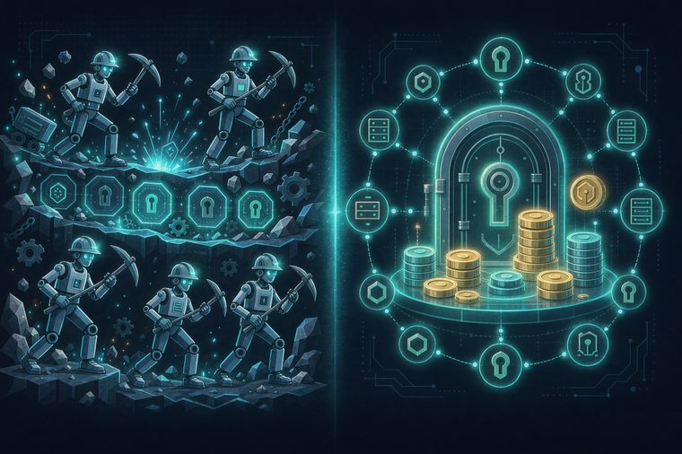
共识机制决定"谁来出块、如何达成一致"，是区块链的核心。它要解决的本质问题是：在互不信任的分布式网络中，让所有节点对同一份账本状态达成共识，并让作恶在经济上不划算。
5.1 PoW（工作量证明，Proof of Work）
原理：矿工通过消耗算力求解数学难题（寻找满足难度目标的哈希），最先解出者获得出块权与奖励；若要篡改历史，必须重做相应区块及其后所有区块的工作量，成本极高。
- 代表项目：比特币、莱特币、狗狗币；
- 优点：安全性历经长期实战检验、抗攻击能力强、去中心化程度高、参与开放；
- 缺点：能耗巨大、依赖专用硬件（ASIC）、出块较慢、可扩展性有限。
5.2 PoS（权益证明，Proof of Stake）
原理：不再比拼算力，而是由用户质押（Stake）代币成为验证者，系统按质押量等因素随机选择验证者来出块与验证；诚实参与获得奖励，作恶则被罚没（Slashing）部分质押。安全性由经济激励与惩罚保障。
- 代表项目：以太坊（2022 年"合并"后转为 PoS）、Solana、Cardano；
- 优点：能耗极低、无需专用硬件、参与门槛低、最终确认更快、可扩展性更好；
- 缺点：可能导致财富集中与中心化、实战历史短于 PoW、机制更复杂。
5.3 PoW 与 PoS 对比
| 维度 | PoW | PoS |
| 出块依据 | 算力竞争 | 质押代币 + 随机选择 |
| 能源消耗 | 高 | 低 |
| 硬件要求 | 专用矿机（ASIC/GPU） | 普通服务器即可 |
| 参与门槛 | 高（设备 + 电力成本） | 较低（持有并质押代币） |
| 安全模型 | 物理算力/能源成本 | 经济质押 + 罚没机制 |
| 代表项目 | 比特币、莱特币 | 以太坊、Solana、Cardano |
没有绝对的优劣：PoW 在追求极致安全与去中心化时更受青睐，PoS 在效率、能耗与可扩展性上更具优势，不同公链按自身目标做取舍。
5.4 其他共识机制
- DPoS（委托权益证明）：持币者投票选出少量"超级节点"出块，性能高但牺牲部分去中心化，代表如 EOS、TRON；
- PoA（权威证明）：由授权节点出块，常用于联盟链/测试网；
- PoH（历史证明）：Solana 使用，为事件提供可验证的时间顺序，配合 PoS 实现高吞吐；
- BFT 类（如 PBFT、Tendermint）：适合高性能、快速最终性的网络。
6. 智能合约与虚拟机
智能合约让区块链从"账本"升级为"可编程平台"。本章介绍智能合约的概念与其运行环境——虚拟机，为后续理解 EVM 链与非 EVM 链做铺垫。
6.1 智能合约
智能合约（Smart Contract）是部署在区块链上、按预设规则自动执行的代码程序。它把"如果发生 X，则执行 Y"的逻辑写进链上，由网络节点共同执行，结果不可篡改、无需中介。它是 DeFi、NFT、DAO 等应用的基础。常见开发语言为 Solidity（EVM）、Rust（Solana）、Move（Aptos/Sui）等。
6.2 虚拟机（VM）
智能合约运行在一个隔离的执行环境——虚拟机中。虚拟机定义了指令集（opcode）、状态模型、计费方式（Gas），并沙箱化执行，防止合约影响底层网络。虚拟机的设计直接决定公链的开发语言、性能与生态兼容性，这也是区分 EVM 链与非 EVM 链的根本。
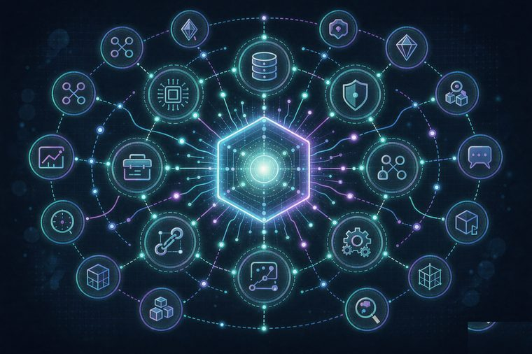
按"智能合约如何执行"这条主线，公链可分为 EVM 链与非 EVM 链两大类。可用一个比喻理解：虚拟机就像手机的操作系统，EVM 链都跑同一个"操作系统"，应用（合约）容易迁移；非 EVM 链各有各的"操作系统"，应用需重写，但往往更快或更安全。
7.1 什么是 EVM 链
EVM（Ethereum Virtual Machine，以太坊虚拟机）是以太坊执行智能合约的运行时环境，定义了标准指令集、沙箱执行模型和基于 Gas 的计费机制。
EVM 兼容链指实现了与 EVM 相同规范、可直接运行为以太坊编写的合约（Solidity/Vyper）的区块链。典型代表：BNB Smart Chain、Polygon PoS、Avalanche C-Chain、Arbitrum、Optimism 等。
优势：
- 生态成熟：可复用 Hardhat、Foundry、Remix、Etherscan、MetaMask 等工具与 OpenZeppelin 等审计过的合约库；
- 可移植性强：同一份 Solidity 合约几乎不改就能部署到多条 EVM 链；
- 人才与流动性集中：开发者多、代码经过大量实战检验。
局限：串行执行导致吞吐受限、存储成本高、合约有大小上限，并留有重入等历史设计隐患。
7.2 什么是非 EVM 链
非 EVM 链指自建执行环境、使用自有虚拟机与编程语言的公链。代表：
| 链 | 虚拟机/语言 | 特点 |
| Solana | SVM（Sealevel）/ Rust | 交易声明所访问账户，支持并行执行，高吞吐、低延迟 |
| Aptos / Sui | MoveVM / Move | 面向资源的语言，资产不可被复制或误销毁，安全性强 |
| Polkadot / NEAR | WASM / Rust 等 | 基于 WebAssembly，可用多种主流语言编写 |
| Cardano | Plutus / eUTXO | 受 Haskell 启发，扩展 UTXO 模型 |
优势：并行执行带来更高性能、语言设计更安全（如 Move 的类型层防双花）、本地费用市场等创新；劣势：工具链与生态相对年轻、需学习新语言、跨链流动性需通过桥接且桥存在安全风险。
7.3 如何选择
- 看重生态、工具、人才与快速上线 → 选 EVM 链；
- 看重高吞吐、低延迟或更强安全语言（如高频交易、游戏）→ 考虑非 EVM 链；
- 注意钱包与地址格式不通用：EVM 地址在 Solana、Sui 上不能直接使用；跨生态互通依赖跨链桥，而桥是历史上损失最惨重的攻击面之一。
开发一条公链是一项系统工程，核心是"让多台互不信任的计算机通过代码达成一致"。下面按阶段给出路线图。
8.1 第一阶段：定位与设计
- 明确定位：通用智能合约平台，还是特定领域的高性能链？目标用户、行业痛点、差异化优势、预期 TPS 是什么？
- 选择共识机制：PoW / PoS / DPoS / BFT 类，权衡安全、去中心化、性能与激励；
- 设计代币经济（Tokenomics）：发行总量与分配、区块奖励、Gas 费机制、通胀/通缩模型、治理代币。
8.2 第二阶段：技术架构
- 网络层：P2P 架构（节点发现、消息广播、同步），常用 libp2p 等库，实现 Gossip 协议；
- 数据层：区块结构（区块头 + 交易列表）、默克尔树、账户模型（UTXO 或账户余额）、状态存储（如 Patricia Trie）、数据库选型（LevelDB / RocksDB）；
- 合约层：选择虚拟机（EVM / WASM / Move 或自研）、合约语言、Gas 计量、沙箱隔离；
- 扩展方案：分片、Layer 2（状态通道、侧链、Rollup）、跨链互操作。
8.3 第三阶段：核心实现
- 开发语言：Go（生态成熟、快速验证）、Rust（内存安全、高性能）、C++（比特币、EOS）等；
- 密码学基础：哈希（SHA-256、Keccak）、椭圆曲线签名（ECDSA / EdDSA）、零知识证明等；
- 共识实现：验证者选举、出块与投票、罚没（Slashing）条件、最终性确认、分叉时的最长链/规则选择；
- P2P 网络：节点发现、安全连接、交易广播、区块传播、断线重连；
- 钱包与账户：密钥生成、交易签名、地址管理。
8.4 第四阶段：配套组件
一条可用的公链还需要：钱包、区块浏览器、RPC/API 层、SDK（JS/TS、Rust、Go）、治理系统、原生代币，以及开发者文档与工具链。
8.5 第五阶段：测试、上线与生态
- 测试：单元测试、网络模拟、共识安全测试、TPS 压力测试、安全审计（含经济攻击模拟）；
- 部署环境：先 Devnet / Testnet 公开测试，再启动主网；
- 主网上线：创世区块配置、初始节点部署、代币分发、RPC/浏览器/钱包上线；
- 生态与治理：开发者激励、漏洞赏金、链上/链下治理、协议升级机制；
- 持续演进：性能优化、隐私保护、跨链、社区与 DAO 治理。
8.6 关键挑战
- 区块链不可能三角：去中心化、安全性、可扩展性难以兼得，需权衡与分层；
- 安全：51% 攻击、智能合约漏洞、女巫攻击，需形式化验证等手段；
- 跨链互操作：跨链桥、IBC 等协议；
- 合规适配：按地区监管要求融入身份验证、交易监控等模块。
9. 常见误区与总结
- 误区：区块链 = 比特币。区块链是底层技术，比特币只是其一个应用。
- 误区：算力越高交易越快。算力影响出块竞争，难度调整维持出块间隔稳定；吞吐提升靠扩容方案。
- 误区：哈希可反推原文。密码学哈希是单向的，无法由哈希值还原原始数据。
- 误区：PoS 一定不如 PoW 安全。二者只是安全模型不同（物理算力 vs 经济质押），各有取舍。
- 误区：EVM 地址到处通用。不同虚拟机生态的钱包与地址格式通常不兼容。
一句话总结：区块链用"链式哈希结构 + 分布式共识"构建了一个多方无需互信即可共同维护的账本；哈希保证数据不可篡改，PoW/PoS 等共识解决谁来记账，智能合约与虚拟机让链具备可编程能力，而 EVM 与非 EVM 之争本质是生态兼容性与执行性能之间的取舍。
10. 延伸阅读与参考来源
本手册内容综合整理自全网公开资料，主要参考来源包括：
- 科普中国、人民网：区块链概念、特点、算力、哈希等科普条目；
- Kryptex / LeedMiner / Cryptogloss 等：Hashrate 单位与挖矿安全机制；
- Gate 学院（哈希释义）、BTCB、Bitara、CoinPaprika：PoW 与 PoS 原理及对比；
- 微信公众号技术文章、Medium / Chainscore Labs / KuCoin：公链开发流程与 EVM vs 非 EVM 分析；
- Money Wiki / The Coin Course / Cryptoriaverse：EVM、非 EVM 与区块链分层模型。
区块链核心知识手册 · 从概念到公链开发
AI 算力整机配置器
已选明细
NEOC（New Energy Ore Chain）即将启动公测
敬请期待😄😄
Company
Community
Learn BSC
Products & Services
Blockscan